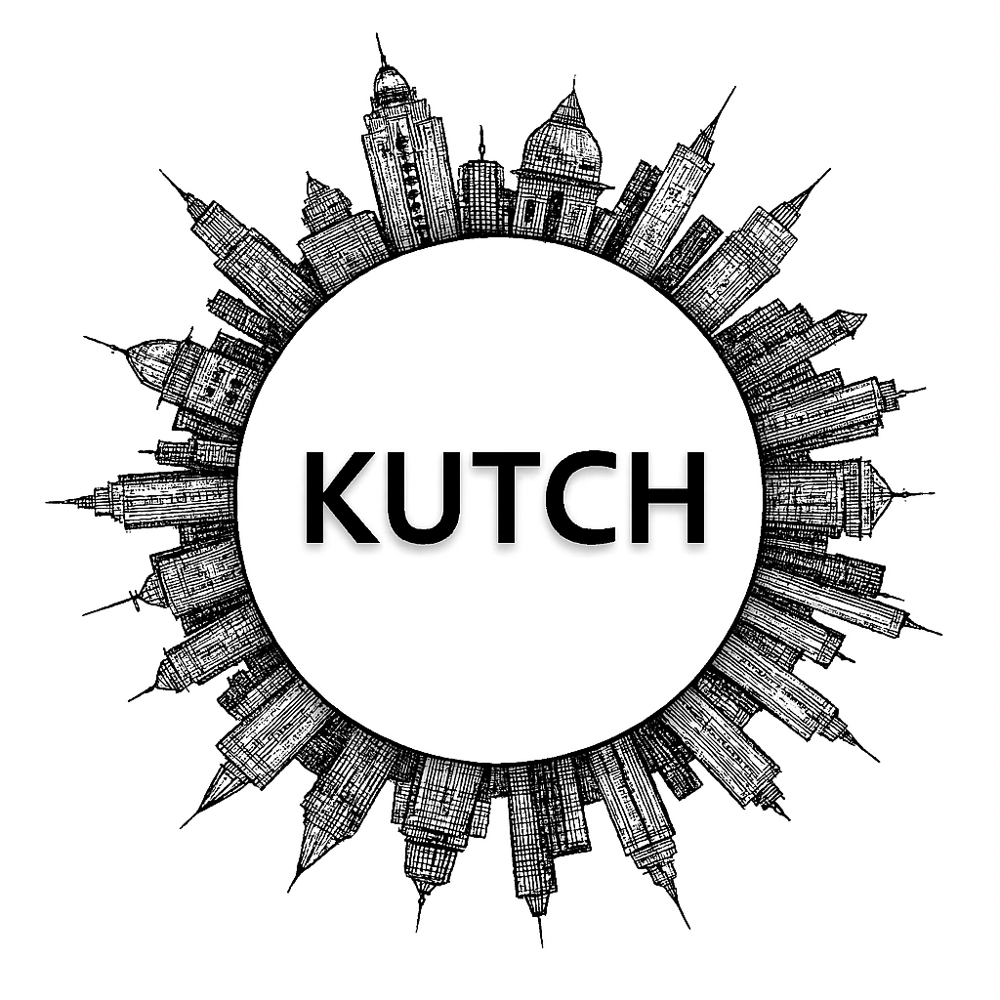

Kutch
Kutch, the largest district in India, is renowned for its vast salt desert, colorful traditions, and vibrant crafts. The Great Rann of Kutch transforms into a shimmering white expanse under the moonlight, offering a surreal experience to visitors. The region is also famous for the annual Rann Utsav, which showcases folk music, dance, handicrafts, and local cuisine. Kutch’s villages are known for their embroidery, pottery, and artistic heritage, while its wildlife sanctuaries protect flamingos, wild asses, and migratory birds. Today, Kutch stands as a unique blend of natural wonder and cultural richness.
Kutch, the largest district in India, is a land of breathtaking contrasts—white desert plains, historic ruins, vibrant handicrafts, and coastal charm. The Great Rann of Kutch, with its shimmering salt desert, transforms into a cultural carnival during the famous Rann Utsav, showcasing folk music, dance, and colorful traditions. Ancient sites like Dholavira connect the region to the Indus Valley Civilization, while Bhuj and Mandvi highlight its architectural and maritime legacy. Renowned for its embroidery, textiles, and artistry, Kutch is a living canvas of heritage and creativity, making it one of Gujarat’s most enchanting destinations.
Peaceful Nature Spots
Historical Places (Itihasik Jagah)
Local Markets (Shopping ke liye)
Famous Festivals
Famous Local Food Items
More Details
Gallery